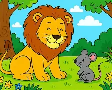

Érase una vez, en las profundidades de la selva, un león majestuoso dormía bajo la sombra fresca de un árbol. El calor del mediodía pesaba sobre la tierra y el viento apenas movía las hojas. El león, rey de todos los animales, descansaba plácidamente, ajeno a todo lo que ocurría a su alrededor. Muy cerca de allí, un pequeño ratón buscaba alimento. Curioso e inquieto, se movía entre las raíces, husmeando. De repente, al ver la enorme silueta del león, sintió una mezcla de temor y asombro. Pero su naturaleza juguetona lo llevó a acercarse más de la cuenta. Subió sobre la enorme garra del león y corrió a través de su lomo. De pronto, el león despertó con un gruñido potente. Con un movimiento rápido atrapó al ratón bajo su pesada zarpa. El pequeño roedor, aterrorizado, empezó a temblar. —¡Por favor, majestad! —gritó el ratón con voz aguda—. ¡Perdóname la vida! No fue mi intención molestarte. Si me dejas libre, te lo agradeceré siempre y tal vez, algún día, pueda ayudarte. El león soltó una carcajada. ¿Cómo podría un ratón ayudar al rey de la selva? Pero algo en aquella petición lo conmovió. Tal vez la valentía del ratón, o su voz temblorosa. Finalmente, levantó la pata y lo dejó libre. —Corre y no vuelvas a molestarme —rugió, y volvió a cerrar los ojos. Pasaron los días, y el león continuó su vida de cazador imponente. Un día, mientras perseguía a una presa, cayó en una trampa de cazadores. Una red fuerte y apretada se cerró sobre su cuerpo. Rugió con furia, tratando de liberarse. Luchó, giró, pateó, pero la red era resistente y lo mantenía inmovilizado. Sus rugidos de auxilio se escucharon a lo lejos. Y entre la maleza, alguien prestó atención. Era el ratón, que al reconocer la voz del león, corrió sin dudar. Cuando llegó, el león lo miró con sorpresa. —¡Pequeño amigo! —dijo con voz ronca—. Parece que tú eres ahora quien puede ayudarme. El ratón no perdió tiempo. Con sus pequeños pero afilados dientes, comenzó a roer las cuerdas de la red con gran rapidez y determinación. Cuerda tras cuerda, fue liberando al león, hasta que este logró salir. —Te lo dije —dijo el ratón con una sonrisa—. Los más pequeños también podemos hacer grandes cosas. Desde ese día, el león y el ratón fueron amigos inseparables. Y el león nunca volvió a subestimar a nadie por su tamaño.